The LD_PRELOAD usage in ctf
Recently I was thinking how to make my reverse engineering skills stronger so that I can perform better in an interview, I decided to start working on CTF challenges during which I can review some basic background and learn some fancy operations. The first day I selected one problem featured “usage of LD_PRELOAD”
The problem is named Hack In The Box Amsterdam: Bin 100 (2014), in which we are given a elf binary called hitb_bin100.elf.
First let’s file it to see the basic information.
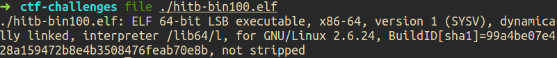
As the image shown, the binary is a 64-bit dynamically linked file.
Now run it chmod +x ./hitb-bin100.elf && ./hitb-bin100.elf.
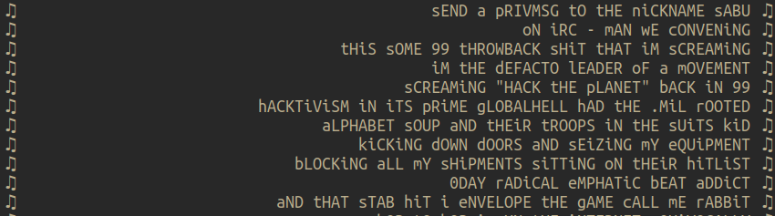
The binary keeps printing out random lyrics with an around one-second time gap in between.
I then dragged it into ida-pro to see what’s inside.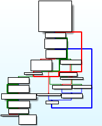
The control flow graph seems normal with two obvious loop structures (red and blue).
Following the control flow I found a basic block(actually not a real basic block, it’s just a unit block in ida super control flow graphs). 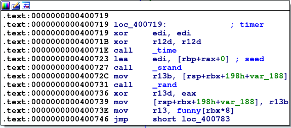
This piece of code make me review how arguments are passed in x64 assembly:
Generally when there are fewer than 7 arguments we will store them into registers: rdi, rsi, rdx, rcx, r8, and r9 from left to the right. While when the number of arguments is larger thant 7, those extra arguments are pushed into the stack from right to left, which stays the same as x86 assembly.
Apart from that, the return value of a function is first passed to rax. If there is a second return value, it will be passed to rdx.
OK, now let’s see what does this code block do by translating it into the C code.
- The prototype of
time()in C istime_t time (time_t* timer), it will return the current time information in atime_tstruct object. - After that, the address of that
time_tobject is passed tosrandas the argument. Thesrand()function is to initialize the psedu-random number generator with the current time info. rand()function executes, producing a psedu-random number and stores it in registerr13d. (Note thatdinr13drefers todouble-wordwhich meansr13dhas the size of 32 bits.)- The value of
r13dis stored to[rsp+rbx+198h+var_188]and then the lyric with the offset[rbx*8]infunnyvariable is fetched and stored intor13.
Now let’s move to the next code block. 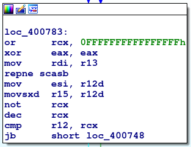
Inside it we find there is a string searching operation done by repne scasb. For repne scasb, we just search eax in target string [rsi:rdi]. In this case, eax is zero and therefore the code snippet is actually looking for the end of a C string. rcx keeps the number of attempts to do the search, which is the length of the target string.
rcx is then compared with r12 which has been xored to zero in the previous block. Let’s see what if the string being scanned is not zero length.
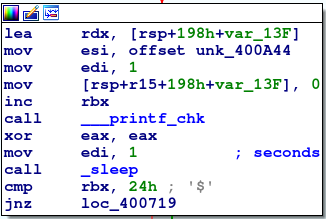
If the string length is not zero, the string will be output by printf_chk and then the machine will sleep for one second.
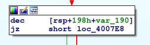
And until [rsp+198+var_190] is decreased to zero, will we jump to the final treasure target:
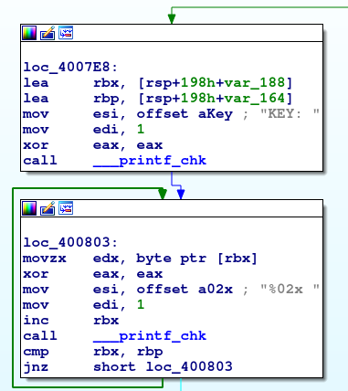
There we output the value of the key.
Where do we set the value of [rsp+198+var_190]?
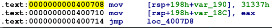
At this step, we have the intuition of capturing the flag – Just accelerating the loops, so that 31337 can be more quickly deduced to zero.
The first idea is to bypass all the loops and directly run the block 0x4007e8. However, this cannot work, since the key value is fetched from [rsp+198h+var_188], which is generated by rand function byte-by-byte during the big loop.
Note: As the below image shows, the value of the key is generated byte by byte during the loop. Since the initial seed of the rand is always the same whenever you run the program (the result lea edi, [rbp+rax+0] will be the same)
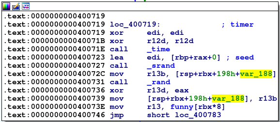
Now comes to the second idea, we change the sleep(1) to sleep(0). Does it work?
No. The result is like below. 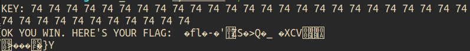
Why sleep() matters a lot?